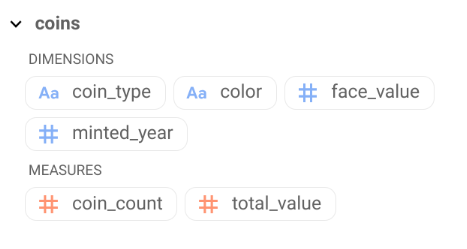
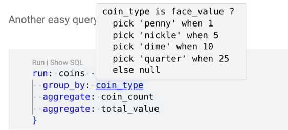
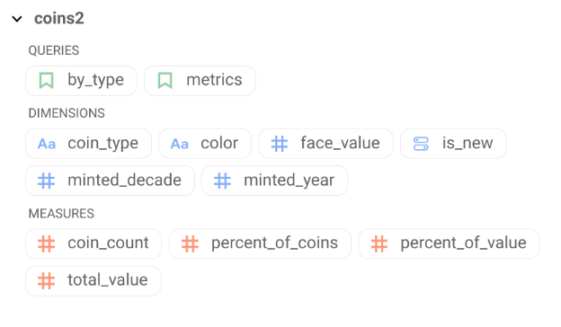

All Posts
All PostsGiven that we learn about data in Kindergarten, It is really surprising how hard it is to query data in the "big" world. In kindergarten data we notice attributes about things, make piles of things, and count things in the piles. We do this even before we learn any "real" math. Strangely, noticing attributes about things and counting things is almost all there is to working with data.
Two types of queries, "Where's Waldo" and "Making Piles"
There are really two types of queries in the world, lookup and aggregating.
Lookup queries are pretty easy. Google search is a lookup query. To search, type in some terms then see a list of results. Searching in SQL this often looks like `SELECT * FROM
The interesting queries, the kindergarten queries, are aggregating. Aggregating queries tell you something about a set of data. The an aggregating query has two main parts, the dimensions and measures.
Dimensions are the attribute you use to decide which pile the thing goes in.
A measure is something you can say about the pile. "How many object?", "How much does it weigh?", "What is the average size of an object in this pile?".
"Ok class lets take this pile of coins and separate them. How many coins are pennies? How many coins are nickels? Dimes? Quarters?"
Aggregating queries tell us things about a datasets. Lookup queries find things.
Data tools are rectangular.
In data world, aggregating queries the piles things we make become rows in the output an table. We pick some attribue from the source table and for every different attribute we recognize, we make a row in the output table. We add columns to the output by measuring things about the rows underlying object.
For this example we are going to use a pile of coins. Each coin has only two attributes. The value of the coin and the year it was minted. We've stored the data about these coins in a data table.
The columns are named face_value and year_minted. Let's see how we can notice things about these coins.

run: duckdb.table('coins.csv') -> {select:*}[ { "face_value": 1, "minted_year": 1930 }, { "face_value": 1, "minted_year": 1920 }, { "face_value": 1, "minted_year": 2022 }, { "face_value": 1, "minted_year": 2020 }, { "face_value": 5, "minted_year": 2012 } ]
SELECT base."face_value" as "face_value", base."minted_year" as "minted_year" FROM coins.csv as base
The first questions is "How Many coins do we have?"
Usually the very first question, "let's count all the coins". In Malloy, the data source, duckdb.table('coins.csv'), is where the comes from. The -> operator asks a question from the source and the stuff in the {} is the question. aggregate: is used to write an expression that tells us something about the size of the pile.
run: duckdb.table('coins.csv') -> { aggregate: coin_count is count() }
[ { "coin_count": 16 } ]
SELECT COUNT(1) as "coin_count" FROM coins.csv as base
Ok Class, how many of each coin do we have?
Lets notice things about these coins and put them into piles. The most obvious feature is the value of the coin. Let's make piles by the face_value of the coins. group_by: is used to determine which pile a coin goes into. How many coins in each pile? We can use the same aggregate: calculation above.
run: duckdb.table('coins.csv') -> { group_by: face_value aggregate: coin_count is count() }
[ { "face_value": 25, "coin_count": 6 }, { "face_value": 1, "coin_count": 4 }, { "face_value": 5, "coin_count": 3 }, { "face_value": 10, "coin_count": 3 } ]
SELECT base."face_value" as "face_value", COUNT(1) as "coin_count" FROM coins.csv as base GROUP BY 1 ORDER BY 2 desc NULLS LAST
Gifted Student
A gifted student asks "How much is each pile worth". We can compute as many calculations as we'd like on each of the piles so we add another calculation total_value. Notice that we write the calculation a little differently than in other languages. Malloy writes sum() this way to insure that calculations are always correct when things get complex.
run: duckdb.table('coins.csv') -> { group_by: face_value aggregate: coin_count is count() total_value is face_value.sum() }
[ { "face_value": 25, "coin_count": 6, "total_value": 150 }, { "face_value": 1, "coin_count": 4, "total_value": 4 }, { "face_value": 5, "coin_count": 3, "total_value": 15 }, { "face_value": 10, "coin_count": 3, "total_value": 30 } ]
SELECT base."face_value" as "face_value", COUNT(1) as "coin_count", COALESCE(SUM(base."face_value"),0) as "total_value" FROM coins.csv as base GROUP BY 1 ORDER BY 2 desc NULLS LAST
We're repeating ourselves.
Notice that we use the calculation for coin_count in all the queries. It is probably a useful concept in this dataset. Also total_value. We encode these concepts into a source: so we can use them simply in subsequent queries. If we were ever have to change a calculation, it would be all in one place.
We're going to add some dimension: calculations too. It would be nice to know the coin_type and the color of each of the coins. dimensions are used in group_by: in queries.
source: coins is duckdb.table('coins.csv') extend { measure: coin_count is count() total_value is face_value.sum() dimension: coin_type is face_value ? pick 'penny' when 1 pick 'nickle' when 5 pick 'dime' when 10 pick 'quarter' when 25 else null dimension: color is face_value ? pick 'copper' when 1 else 'silver' }
source: coins
If we were to click the 'schema' button we'd see all the definition for 'coins'. We can use named object in queries witout having to repeat the definitions.
How many coins of each color?
Asking questions is much easier now. We have coins as a shorthand for duckdb.table('coins.csv') and color and coin_count as shorthad for those calculations.
run: coins -> { group_by: color aggregate: coin_count }
[ { "color": "silver", "coin_count": 12 }, { "color": "copper", "coin_count": 4 } ]
SELECT CASE WHEN (base."face_value"=1) THEN 'copper' ELSE 'silver' END as "color", COUNT(1) as "coin_count" FROM coins.csv as base GROUP BY 1 ORDER BY 2 desc NULLS LAST
How many of each type of coin?
Another easy query, and pretty easy to read too.
run: coins -> { group_by: coin_type aggregate: coin_count aggregate: total_value }
[ { "coin_type": "quarter", "coin_count": 6, "total_value": 150 }, { "coin_type": "penny", "coin_count": 4, "total_value": 4 }, { "coin_type": "nickle", "coin_count": 3, "total_value": 15 }, { "coin_type": "dime", "coin_count": 3, "total_value": 30 } ]
SELECT CASE WHEN (base."face_value"=1) THEN 'penny' WHEN (base."face_value"=5) THEN 'nickle' WHEN (base."face_value"=10) THEN 'dime' WHEN (base."face_value"=25) THEN 'quarter' ELSE NULL END as "coin_type", COUNT(1) as "coin_count", COALESCE(SUM(base."face_value"),0) as "total_value" FROM coins.csv as base GROUP BY 1 ORDER BY 2 desc NULLS LAST
See the definitions
If we hold the control (or command) key and hovor over a variable, VSCode will show us the definition. This can be really useful when you come upon a query you didn't write.
Shorter-hand.
Malloy is designed to make building queries easy.
Queries can be constructed from reusable parts. Above we saw how e can put reusable definitions into a source:. We can also use a shorthand to combine these parts (dimensions, measures, and queries) together.
A partial query is either a name or something between curlies ({}). Partial queries can be combined with a + operator.
The query below is the same as the query above.
run: coins -> {group_by: coin_type} + {aggregate: coin_count} + {aggregate: total_value}
[ { "coin_type": "quarter", "coin_count": 6, "total_value": 150 }, { "coin_type": "penny", "coin_count": 4, "total_value": 4 }, { "coin_type": "nickle", "coin_count": 3, "total_value": 15 }, { "coin_type": "dime", "coin_count": 3, "total_value": 30 } ]
SELECT CASE WHEN (base."face_value"=1) THEN 'penny' WHEN (base."face_value"=5) THEN 'nickle' WHEN (base."face_value"=10) THEN 'dime' WHEN (base."face_value"=25) THEN 'quarter' ELSE NULL END as "coin_type", COUNT(1) as "coin_count", COALESCE(SUM(base."face_value"),0) as "total_value" FROM coins.csv as base GROUP BY 1 ORDER BY 2 desc NULLS LAST
Dimensions and measures can be used as partial queries.
When writing a query ... -> {group_by: coin_type} ... is the same as ... -> coin_type ...
run: coins -> // same as: coin_type // {group_by: coin_type} + coin_count // {aggregate: coin_count} + total_value // {aggregate: coin_count}
[ { "coin_type": "quarter", "coin_count": 6, "total_value": 150 }, { "coin_type": "penny", "coin_count": 4, "total_value": 4 }, { "coin_type": "nickle", "coin_count": 3, "total_value": 15 }, { "coin_type": "dime", "coin_count": 3, "total_value": 30 } ]
SELECT CASE WHEN (base."face_value"=1) THEN 'penny' WHEN (base."face_value"=5) THEN 'nickle' WHEN (base."face_value"=10) THEN 'dime' WHEN (base."face_value"=25) THEN 'quarter' ELSE NULL END as "coin_type", COUNT(1) as "coin_count", COALESCE(SUM(base."face_value"),0) as "total_value" FROM coins.csv as base GROUP BY 1 ORDER BY 2 desc NULLS LAST
We can write any part of the query either way. All the queries below represent the same queries.
run: coins -> coin_type + coin_count + total_value run: coins -> {group_by: coin_type} + coin_count + total_value run: coins -> coin_type + {aggregate: coin_count, total_value} run: coins -> { group_by: coin_type aggregate: coin_count, total_value }
Rendering results
By default, Malloy shows results as tables. Results can be annotated by placing a line before the definition that starts with # In the case below, we want to show the results as a bar_chart. A bar chart expects 2 or three columns. The first is the x axis, second is the y axis and the third, if it exists, controls the color.
# bar_chart run: coins -> coin_type + coin_count + total_value
[ { "coin_type": "quarter", "coin_count": 6, "total_value": 150 }, { "coin_type": "penny", "coin_count": 4, "total_value": 4 }, { "coin_type": "dime", "coin_count": 3, "total_value": 30 }, { "coin_type": "nickle", "coin_count": 3, "total_value": 15 } ]
SELECT CASE WHEN (base."face_value"=1) THEN 'penny' WHEN (base."face_value"=5) THEN 'nickle' WHEN (base."face_value"=10) THEN 'dime' WHEN (base."face_value"=25) THEN 'quarter' ELSE NULL END as "coin_type", COUNT(1) as "coin_count", COALESCE(SUM(base."face_value"),0) as "total_value" FROM coins.csv as base GROUP BY 1 ORDER BY 2 desc NULLS LAST
Extending Sources
Suppose someone had written this great coin counting model and I wanted to use it in my analysis. Malloy lets you extend (inherit from) a source and create a new source with new definitions. We add a couple of new dimensions, a new calculation and some views. In Malloy views are common ways of looking at data. We've added two views here. The first is metrics which is the common ways of look at data. And by_type, the most common over all query.
// import 'coins.malloy' source: coins2 is coins extend { dimension: is_new is minted_year >= 2000 dimension: minted_decade is floor(minted_year/10) * 10 measure: # percent percent_of_value is total_value/all(total_value) # percent percent_of_coins is coin_count/all(coin_count) view: metrics is { aggregate: total_value, coin_count, percent_of_value, percent_of_coins } // we always look at this data by coin type view: by_type is coin_type + metrics }
The schema for coins
Views: The most common ways of looking at the data.
Notice the views. Views can be used by them selves or in combination with other queries. Views are bigger building blocks.
Let's start with metrics. Metrics is a view that comuptes all the things we might want to ask about a pile of coins.
run: coins2 -> metrics[ { "total_value": 199, "coin_count": 16, "percent_of_value": 1, "percent_of_coins": 1 } ]
WITH __stage0 AS ( SELECT group_set, CASE WHEN group_set=1 THEN COALESCE(SUM(base."face_value"),0) END as "total_value__1", CASE WHEN group_set=1 THEN COUNT(1) END as "coin_count__1", (CASE WHEN group_set=1 THEN COALESCE(SUM(base."face_value"),0) END)*1.0/MAX((CASE WHEN group_set=0 THEN COALESCE(SUM(base."face_value"),0) END)) OVER () as "percent_of_value__1", (CASE WHEN group_set=1 THEN COUNT(1) END)*1.0/MAX((CASE WHEN group_set=0 THEN COUNT(1) END)) OVER () as "percent_of_coins__1" FROM coins.csv as base CROSS JOIN (SELECT UNNEST(GENERATE_SERIES(0,1,1)) as group_set ) as group_set GROUP BY 1 ) SELECT MAX(CASE WHEN group_set=1 THEN "total_value__1" END) as "total_value", MAX(CASE WHEN group_set=1 THEN "coin_count__1" END) as "coin_count", MAX(CASE WHEN group_set=1 THEN "percent_of_value__1" END) as "percent_of_value", MAX(CASE WHEN group_set=1 THEN "percent_of_coins__1" END) as "percent_of_coins" FROM __stage0 WHERE group_set NOT IN (0)
Composing with metrics
In our model above we've defined a view called 'metrics' and a dimension called 'color'
run: coins2 -> color + metrics[ { "color": "silver", "total_value": 195, "coin_count": 12, "percent_of_value": 0.9798994974874372, "percent_of_coins": 0.75 }, { "color": "copper", "total_value": 4, "coin_count": 4, "percent_of_value": 0.020100502512562814, "percent_of_coins": 0.25 } ]
WITH __stage0 AS ( SELECT group_set, CASE WHEN group_set=1 THEN CASE WHEN (base."face_value"=1) THEN 'copper' ELSE 'silver' END END as "color__1", CASE WHEN group_set=1 THEN COALESCE(SUM(base."face_value"),0) END as "total_value__1", CASE WHEN group_set=1 THEN COUNT(1) END as "coin_count__1", (CASE WHEN group_set=1 THEN COALESCE(SUM(base."face_value"),0) END)*1.0/MAX((CASE WHEN group_set=0 THEN COALESCE(SUM(base."face_value"),0) END)) OVER () as "percent_of_value__1", (CASE WHEN group_set=1 THEN COUNT(1) END)*1.0/MAX((CASE WHEN group_set=0 THEN COUNT(1) END)) OVER () as "percent_of_coins__1" FROM coins.csv as base CROSS JOIN (SELECT UNNEST(GENERATE_SERIES(0,1,1)) as group_set ) as group_set GROUP BY 1,2 ) SELECT "color__1" as "color", MAX(CASE WHEN group_set=1 THEN "total_value__1" END) as "total_value", MAX(CASE WHEN group_set=1 THEN "coin_count__1" END) as "coin_count", MAX(CASE WHEN group_set=1 THEN "percent_of_value__1" END) as "percent_of_value", MAX(CASE WHEN group_set=1 THEN "percent_of_coins__1" END) as "percent_of_coins" FROM __stage0 WHERE group_set NOT IN (0) GROUP BY 1 ORDER BY 2 desc NULLS LAST
Looking at data by type is the most common query.
Often with a dataset, we might want to commonly look at the data in a particular way. In this case, we probably want to look at coins by coin_type so we've built a by_type view.
run: coins2 -> by_type[ { "coin_type": "quarter", "total_value": 150, "coin_count": 6, "percent_of_value": 0.7537688442211056, "percent_of_coins": 0.375 }, { "coin_type": "dime", "total_value": 30, "coin_count": 3, "percent_of_value": 0.1507537688442211, "percent_of_coins": 0.1875 }, { "coin_type": "nickle", "total_value": 15, "coin_count": 3, "percent_of_value": 0.07537688442211055, "percent_of_coins": 0.1875 }, { "coin_type": "penny", "total_value": 4, "coin_count": 4, "percent_of_value": 0.020100502512562814, "percent_of_coins": 0.25 } ]
WITH __stage0 AS ( SELECT group_set, CASE WHEN group_set=1 THEN CASE WHEN (base."face_value"=1) THEN 'penny' WHEN (base."face_value"=5) THEN 'nickle' WHEN (base."face_value"=10) THEN 'dime' WHEN (base."face_value"=25) THEN 'quarter' ELSE NULL END END as "coin_type__1", CASE WHEN group_set=1 THEN COALESCE(SUM(base."face_value"),0) END as "total_value__1", CASE WHEN group_set=1 THEN COUNT(1) END as "coin_count__1", (CASE WHEN group_set=1 THEN COALESCE(SUM(base."face_value"),0) END)*1.0/MAX((CASE WHEN group_set=0 THEN COALESCE(SUM(base."face_value"),0) END)) OVER () as "percent_of_value__1", (CASE WHEN group_set=1 THEN COUNT(1) END)*1.0/MAX((CASE WHEN group_set=0 THEN COUNT(1) END)) OVER () as "percent_of_coins__1" FROM coins.csv as base CROSS JOIN (SELECT UNNEST(GENERATE_SERIES(0,1,1)) as group_set ) as group_set GROUP BY 1,2 ) SELECT "coin_type__1" as "coin_type", MAX(CASE WHEN group_set=1 THEN "total_value__1" END) as "total_value", MAX(CASE WHEN group_set=1 THEN "coin_count__1" END) as "coin_count", MAX(CASE WHEN group_set=1 THEN "percent_of_value__1" END) as "percent_of_value", MAX(CASE WHEN group_set=1 THEN "percent_of_coins__1" END) as "percent_of_coins" FROM __stage0 WHERE group_set NOT IN (0) GROUP BY 1 ORDER BY 2 desc NULLS LAST
We can add filters to any query
Adding filters let us look at subsets of the data. In this case we are looking at coins minted this century.
run: coins2 -> by_type + {where: is_new}[ { "coin_type": "quarter", "total_value": 50, "coin_count": 2, "percent_of_value": 0.5154639175257731, "percent_of_coins": 0.2 }, { "coin_type": "dime", "total_value": 30, "coin_count": 3, "percent_of_value": 0.30927835051546393, "percent_of_coins": 0.3 }, { "coin_type": "nickle", "total_value": 15, "coin_count": 3, "percent_of_value": 0.15463917525773196, "percent_of_coins": 0.3 }, { "coin_type": "penny", "total_value": 2, "coin_count": 2, "percent_of_value": 0.020618556701030927, "percent_of_coins": 0.2 } ]
WITH __stage0 AS ( SELECT group_set, CASE WHEN group_set=1 THEN CASE WHEN (base."face_value"=1) THEN 'penny' WHEN (base."face_value"=5) THEN 'nickle' WHEN (base."face_value"=10) THEN 'dime' WHEN (base."face_value"=25) THEN 'quarter' ELSE NULL END END as "coin_type__1", CASE WHEN group_set=1 THEN COALESCE(SUM(base."face_value"),0) END as "total_value__1", CASE WHEN group_set=1 THEN COUNT(1) END as "coin_count__1", (CASE WHEN group_set=1 THEN COALESCE(SUM(base."face_value"),0) END)*1.0/MAX((CASE WHEN group_set=0 THEN COALESCE(SUM(base."face_value"),0) END)) OVER () as "percent_of_value__1", (CASE WHEN group_set=1 THEN COUNT(1) END)*1.0/MAX((CASE WHEN group_set=0 THEN COUNT(1) END)) OVER () as "percent_of_coins__1" FROM coins.csv as base CROSS JOIN (SELECT UNNEST(GENERATE_SERIES(0,1,1)) as group_set ) as group_set WHERE (base."minted_year">=2000) GROUP BY 1,2 ) SELECT "coin_type__1" as "coin_type", MAX(CASE WHEN group_set=1 THEN "total_value__1" END) as "total_value", MAX(CASE WHEN group_set=1 THEN "coin_count__1" END) as "coin_count", MAX(CASE WHEN group_set=1 THEN "percent_of_value__1" END) as "percent_of_value", MAX(CASE WHEN group_set=1 THEN "percent_of_coins__1" END) as "percent_of_coins" FROM __stage0 WHERE group_set NOT IN (0) GROUP BY 1 ORDER BY 2 desc NULLS LAST
We can query by more than one dimension
(but this is hard to read)
run: coins2 -> coin_type + is_new + metrics[ { "coin_type": "quarter", "is_new": false, "total_value": 100, "coin_count": 4, "percent_of_value": 0.5025125628140703, "percent_of_coins": 0.25 }, { "coin_type": "quarter", "is_new": true, "total_value": 50, "coin_count": 2, "percent_of_value": 0.25125628140703515, "percent_of_coins": 0.125 }, { "coin_type": "dime", "is_new": true, "total_value": 30, "coin_count": 3, "percent_of_value": 0.1507537688442211, "percent_of_coins": 0.1875 }, { "coin_type": "nickle", "is_new": true, "total_value": 15, "coin_count": 3, "percent_of_value": 0.07537688442211055, "percent_of_coins": 0.1875 }, { "coin_type": "penny", "is_new": true, "total_value": 2, "coin_count": 2, "percent_of_value": 0.010050251256281407, "percent_of_coins": 0.125 } ]
WITH __stage0 AS ( SELECT group_set, CASE WHEN group_set=1 THEN CASE WHEN (base."face_value"=1) THEN 'penny' WHEN (base."face_value"=5) THEN 'nickle' WHEN (base."face_value"=10) THEN 'dime' WHEN (base."face_value"=25) THEN 'quarter' ELSE NULL END END as "coin_type__1", CASE WHEN group_set=1 THEN base."minted_year">=2000 END as "is_new__1", CASE WHEN group_set=1 THEN COALESCE(SUM(base."face_value"),0) END as "total_value__1", CASE WHEN group_set=1 THEN COUNT(1) END as "coin_count__1", (CASE WHEN group_set=1 THEN COALESCE(SUM(base."face_value"),0) END)*1.0/MAX((CASE WHEN group_set=0 THEN COALESCE(SUM(base."face_value"),0) END)) OVER () as "percent_of_value__1", (CASE WHEN group_set=1 THEN COUNT(1) END)*1.0/MAX((CASE WHEN group_set=0 THEN COUNT(1) END)) OVER () as "percent_of_coins__1" FROM coins.csv as base CROSS JOIN (SELECT UNNEST(GENERATE_SERIES(0,1,1)) as group_set ) as group_set GROUP BY 1,2,3 ) SELECT "coin_type__1" as "coin_type", "is_new__1" as "is_new", MAX(CASE WHEN group_set=1 THEN "total_value__1" END) as "total_value", MAX(CASE WHEN group_set=1 THEN "coin_count__1" END) as "coin_count", MAX(CASE WHEN group_set=1 THEN "percent_of_value__1" END) as "percent_of_value", MAX(CASE WHEN group_set=1 THEN "percent_of_coins__1" END) as "percent_of_coins" FROM __stage0 WHERE group_set NOT IN (0) GROUP BY 1,2 ORDER BY 3 desc NULLS LAST
Nesting data lets us look at more than one dimension at a time.
run: coins2 -> coin_type + metrics + { nest: is_new + coin_count }
[ { "coin_type": "quarter", "total_value": 150, "coin_count": 6, "percent_of_value": 0.7537688442211056, "percent_of_coins": 0.375, "is_new": [ { "is_new": false, "coin_count": 4 }, { "is_new": true, "coin_count": 2 } ] }, { "coin_type": "dime", "total_value": 30, "coin_count": 3, "percent_of_value": 0.1507537688442211, "percent_of_coins": 0.1875, "is_new": [ { "is_new": true, "coin_count": 3 } ] }, { "coin_type": "nickle", "total_value": 15, "coin_count": 3, "percent_of_value": 0.07537688442211055, "percent_of_coins": 0.1875, "is_new": [ { "is_new": true, "coin_count": 3 } ] }, { "coin_type": "penny", "total_value": 4, "coin_count": 4, "percent_of_value": 0.020100502512562814, "percent_of_coins": 0.25, "is_new": [ { "is_new": false, "coin_count": 2 }, { "is_new": true, "coin_count": 2 } ] } ]
WITH __stage0 AS ( SELECT group_set, CASE WHEN group_set IN (1,2) THEN CASE WHEN (base."face_value"=1) THEN 'penny' WHEN (base."face_value"=5) THEN 'nickle' WHEN (base."face_value"=10) THEN 'dime' WHEN (base."face_value"=25) THEN 'quarter' ELSE NULL END END as "coin_type__1", CASE WHEN group_set=1 THEN COALESCE(SUM(base."face_value"),0) END as "total_value__1", CASE WHEN group_set=1 THEN COUNT(1) END as "coin_count__1", (CASE WHEN group_set=1 THEN COALESCE(SUM(base."face_value"),0) END)*1.0/MAX((CASE WHEN group_set=0 THEN COALESCE(SUM(base."face_value"),0) END)) OVER () as "percent_of_value__1", (CASE WHEN group_set=1 THEN COUNT(1) END)*1.0/MAX((CASE WHEN group_set=0 THEN COUNT(1) END)) OVER () as "percent_of_coins__1", CASE WHEN group_set=2 THEN base."minted_year">=2000 END as "is_new__2", CASE WHEN group_set=2 THEN COUNT(1) END as "coin_count__2" FROM coins.csv as base CROSS JOIN (SELECT UNNEST(GENERATE_SERIES(0,2,1)) as group_set ) as group_set GROUP BY 1,2,7 ) SELECT "coin_type__1" as "coin_type", MAX(CASE WHEN group_set=1 THEN "total_value__1" END) as "total_value", MAX(CASE WHEN group_set=1 THEN "coin_count__1" END) as "coin_count", MAX(CASE WHEN group_set=1 THEN "percent_of_value__1" END) as "percent_of_value", MAX(CASE WHEN group_set=1 THEN "percent_of_coins__1" END) as "percent_of_coins", COALESCE(LIST({ "is_new": "is_new__2", "coin_count": "coin_count__2"} ORDER BY "coin_count__2" desc NULLS LAST) FILTER (WHERE group_set=2),[]) as "is_new" FROM __stage0 WHERE group_set NOT IN (0) GROUP BY 1 ORDER BY 2 desc NULLS LAST
run: coins2 -> coin_type + metrics + { # pivot nest: is_new + metrics }
[ { "coin_type": "quarter", "total_value": 150, "coin_count": 6, "percent_of_value": 0.7537688442211056, "percent_of_coins": 0.375, "is_new": [ { "is_new": false, "total_value": 100, "coin_count": 4, "percent_of_value": 0.6666666666666666, "percent_of_coins": 0.6666666666666666 }, { "is_new": true, "total_value": 50, "coin_count": 2, "percent_of_value": 0.3333333333333333, "percent_of_coins": 0.3333333333333333 } ] }, { "coin_type": "dime", "total_value": 30, "coin_count": 3, "percent_of_value": 0.1507537688442211, "percent_of_coins": 0.1875, "is_new": [ { "is_new": true, "total_value": 30, "coin_count": 3, "percent_of_value": 1, "percent_of_coins": 1 } ] }, { "coin_type": "nickle", "total_value": 15, "coin_count": 3, "percent_of_value": 0.07537688442211055, "percent_of_coins": 0.1875, "is_new": [ { "is_new": true, "total_value": 15, "coin_count": 3, "percent_of_value": 1, "percent_of_coins": 1 } ] }, { "coin_type": "penny", "total_value": 4, "coin_count": 4, "percent_of_value": 0.020100502512562814, "percent_of_coins": 0.25, "is_new": [ { "is_new": false, "total_value": 2, "coin_count": 2, "percent_of_value": 0.5, "percent_of_coins": 0.5 }, { "is_new": true, "total_value": 2, "coin_count": 2, "percent_of_value": 0.5, "percent_of_coins": 0.5 } ] } ]
WITH __stage0 AS ( SELECT group_set, CASE WHEN group_set IN (1,2) THEN CASE WHEN (base."face_value"=1) THEN 'penny' WHEN (base."face_value"=5) THEN 'nickle' WHEN (base."face_value"=10) THEN 'dime' WHEN (base."face_value"=25) THEN 'quarter' ELSE NULL END END as "coin_type__1", CASE WHEN group_set=1 THEN COALESCE(SUM(base."face_value"),0) END as "total_value__1", CASE WHEN group_set=1 THEN COUNT(1) END as "coin_count__1", (CASE WHEN group_set=1 THEN COALESCE(SUM(base."face_value"),0) END)*1.0/MAX((CASE WHEN group_set=0 THEN COALESCE(SUM(base."face_value"),0) END)) OVER () as "percent_of_value__1", (CASE WHEN group_set=1 THEN COUNT(1) END)*1.0/MAX((CASE WHEN group_set=0 THEN COUNT(1) END)) OVER () as "percent_of_coins__1", CASE WHEN group_set=2 THEN base."minted_year">=2000 END as "is_new__2", CASE WHEN group_set=2 THEN COALESCE(SUM(base."face_value"),0) END as "total_value__2", CASE WHEN group_set=2 THEN COUNT(1) END as "coin_count__2", (CASE WHEN group_set=2 THEN COALESCE(SUM(base."face_value"),0) END)*1.0/MAX((CASE WHEN group_set=1 THEN COALESCE(SUM(base."face_value"),0) END)) OVER (PARTITION BY CASE WHEN group_set IN (1,2) THEN CASE WHEN (base."face_value"=1) THEN 'penny' WHEN (base."face_value"=5) THEN 'nickle' WHEN (base."face_value"=10) THEN 'dime' WHEN (base."face_value"=25) THEN 'quarter' ELSE NULL END END) as "percent_of_value__2", (CASE WHEN group_set=2 THEN COUNT(1) END)*1.0/MAX((CASE WHEN group_set=1 THEN COUNT(1) END)) OVER (PARTITION BY CASE WHEN group_set IN (1,2) THEN CASE WHEN (base."face_value"=1) THEN 'penny' WHEN (base."face_value"=5) THEN 'nickle' WHEN (base."face_value"=10) THEN 'dime' WHEN (base."face_value"=25) THEN 'quarter' ELSE NULL END END) as "percent_of_coins__2" FROM coins.csv as base CROSS JOIN (SELECT UNNEST(GENERATE_SERIES(0,2,1)) as group_set ) as group_set GROUP BY 1,2,7 ) SELECT "coin_type__1" as "coin_type", MAX(CASE WHEN group_set=1 THEN "total_value__1" END) as "total_value", MAX(CASE WHEN group_set=1 THEN "coin_count__1" END) as "coin_count", MAX(CASE WHEN group_set=1 THEN "percent_of_value__1" END) as "percent_of_value", MAX(CASE WHEN group_set=1 THEN "percent_of_coins__1" END) as "percent_of_coins", COALESCE(LIST({ "is_new": "is_new__2", "total_value": "total_value__2", "coin_count": "coin_count__2", "percent_of_value": "percent_of_value__2", "percent_of_coins": "percent_of_coins__2"} ORDER BY "total_value__2" desc NULLS LAST) FILTER (WHERE group_set=2),[]) as "is_new" FROM __stage0 WHERE group_set NOT IN (0) GROUP BY 1 ORDER BY 2 desc NULLS LAST
run: coins2 -> coin_type + metrics + { nest: minted_year + coin_count }
[ { "coin_type": "quarter", "total_value": 150, "coin_count": 6, "percent_of_value": 0.7537688442211056, "percent_of_coins": 0.375, "minted_year": [ { "minted_year": 2022, "coin_count": 1 }, { "minted_year": 1988, "coin_count": 1 }, { "minted_year": 2013, "coin_count": 1 }, { "minted_year": 1968, "coin_count": 1 }, { "minted_year": 1999, "coin_count": 1 }, { "minted_year": 1977, "coin_count": 1 } ] }, { "coin_type": "dime", "total_value": 30, "coin_count": 3, "percent_of_value": 0.1507537688442211, "percent_of_coins": 0.1875, "minted_year": [ { "minted_year": 2004, "coin_count": 1 }, { "minted_year": 2018, "coin_count": 1 }, { "minted_year": 2017, "coin_count": 1 } ] }, { "coin_type": "nickle", "total_value": 15, "coin_count": 3, "percent_of_value": 0.07537688442211055, "percent_of_coins": 0.1875, "minted_year": [ { "minted_year": 2012, "coin_count": 1 }, { "minted_year": 2014, "coin_count": 1 }, { "minted_year": 2000, "coin_count": 1 } ] }, { "coin_type": "penny", "total_value": 4, "coin_count": 4, "percent_of_value": 0.020100502512562814, "percent_of_coins": 0.25, "minted_year": [ { "minted_year": 1930, "coin_count": 1 }, { "minted_year": 1920, "coin_count": 1 }, { "minted_year": 2020, "coin_count": 1 }, { "minted_year": 2022, "coin_count": 1 } ] } ]
WITH __stage0 AS ( SELECT group_set, CASE WHEN group_set IN (1,2) THEN CASE WHEN (base."face_value"=1) THEN 'penny' WHEN (base."face_value"=5) THEN 'nickle' WHEN (base."face_value"=10) THEN 'dime' WHEN (base."face_value"=25) THEN 'quarter' ELSE NULL END END as "coin_type__1", CASE WHEN group_set=1 THEN COALESCE(SUM(base."face_value"),0) END as "total_value__1", CASE WHEN group_set=1 THEN COUNT(1) END as "coin_count__1", (CASE WHEN group_set=1 THEN COALESCE(SUM(base."face_value"),0) END)*1.0/MAX((CASE WHEN group_set=0 THEN COALESCE(SUM(base."face_value"),0) END)) OVER () as "percent_of_value__1", (CASE WHEN group_set=1 THEN COUNT(1) END)*1.0/MAX((CASE WHEN group_set=0 THEN COUNT(1) END)) OVER () as "percent_of_coins__1", CASE WHEN group_set=2 THEN base."minted_year" END as "minted_year__2", CASE WHEN group_set=2 THEN COUNT(1) END as "coin_count__2" FROM coins.csv as base CROSS JOIN (SELECT UNNEST(GENERATE_SERIES(0,2,1)) as group_set ) as group_set GROUP BY 1,2,7 ) SELECT "coin_type__1" as "coin_type", MAX(CASE WHEN group_set=1 THEN "total_value__1" END) as "total_value", MAX(CASE WHEN group_set=1 THEN "coin_count__1" END) as "coin_count", MAX(CASE WHEN group_set=1 THEN "percent_of_value__1" END) as "percent_of_value", MAX(CASE WHEN group_set=1 THEN "percent_of_coins__1" END) as "percent_of_coins", COALESCE(LIST({ "minted_year": "minted_year__2", "coin_count": "coin_count__2"} ORDER BY "coin_count__2" desc NULLS LAST) FILTER (WHERE group_set=2),[]) as "minted_year" FROM __stage0 WHERE group_set NOT IN (0) GROUP BY 1 ORDER BY 2 desc NULLS LAST
We nested data can be shown with a variety can have a variety of rendering options.
run: coins2 -> coin_type + metrics + { # list_detail nest: minted_year + coin_count }
[ { "coin_type": "quarter", "total_value": 150, "coin_count": 6, "percent_of_value": 0.7537688442211056, "percent_of_coins": 0.375, "minted_year": [ { "minted_year": 2022, "coin_count": 1 }, { "minted_year": 1988, "coin_count": 1 }, { "minted_year": 2013, "coin_count": 1 }, { "minted_year": 1968, "coin_count": 1 }, { "minted_year": 1999, "coin_count": 1 }, { "minted_year": 1977, "coin_count": 1 } ] }, { "coin_type": "dime", "total_value": 30, "coin_count": 3, "percent_of_value": 0.1507537688442211, "percent_of_coins": 0.1875, "minted_year": [ { "minted_year": 2004, "coin_count": 1 }, { "minted_year": 2018, "coin_count": 1 }, { "minted_year": 2017, "coin_count": 1 } ] }, { "coin_type": "nickle", "total_value": 15, "coin_count": 3, "percent_of_value": 0.07537688442211055, "percent_of_coins": 0.1875, "minted_year": [ { "minted_year": 2012, "coin_count": 1 }, { "minted_year": 2014, "coin_count": 1 }, { "minted_year": 2000, "coin_count": 1 } ] }, { "coin_type": "penny", "total_value": 4, "coin_count": 4, "percent_of_value": 0.020100502512562814, "percent_of_coins": 0.25, "minted_year": [ { "minted_year": 1930, "coin_count": 1 }, { "minted_year": 1920, "coin_count": 1 }, { "minted_year": 2020, "coin_count": 1 }, { "minted_year": 2022, "coin_count": 1 } ] } ]
WITH __stage0 AS ( SELECT group_set, CASE WHEN group_set IN (1,2) THEN CASE WHEN (base."face_value"=1) THEN 'penny' WHEN (base."face_value"=5) THEN 'nickle' WHEN (base."face_value"=10) THEN 'dime' WHEN (base."face_value"=25) THEN 'quarter' ELSE NULL END END as "coin_type__1", CASE WHEN group_set=1 THEN COALESCE(SUM(base."face_value"),0) END as "total_value__1", CASE WHEN group_set=1 THEN COUNT(1) END as "coin_count__1", (CASE WHEN group_set=1 THEN COALESCE(SUM(base."face_value"),0) END)*1.0/MAX((CASE WHEN group_set=0 THEN COALESCE(SUM(base."face_value"),0) END)) OVER () as "percent_of_value__1", (CASE WHEN group_set=1 THEN COUNT(1) END)*1.0/MAX((CASE WHEN group_set=0 THEN COUNT(1) END)) OVER () as "percent_of_coins__1", CASE WHEN group_set=2 THEN base."minted_year" END as "minted_year__2", CASE WHEN group_set=2 THEN COUNT(1) END as "coin_count__2" FROM coins.csv as base CROSS JOIN (SELECT UNNEST(GENERATE_SERIES(0,2,1)) as group_set ) as group_set GROUP BY 1,2,7 ) SELECT "coin_type__1" as "coin_type", MAX(CASE WHEN group_set=1 THEN "total_value__1" END) as "total_value", MAX(CASE WHEN group_set=1 THEN "coin_count__1" END) as "coin_count", MAX(CASE WHEN group_set=1 THEN "percent_of_value__1" END) as "percent_of_value", MAX(CASE WHEN group_set=1 THEN "percent_of_coins__1" END) as "percent_of_coins", COALESCE(LIST({ "minted_year": "minted_year__2", "coin_count": "coin_count__2"} ORDER BY "coin_count__2" desc NULLS LAST) FILTER (WHERE group_set=2),[]) as "minted_year" FROM __stage0 WHERE group_set NOT IN (0) GROUP BY 1 ORDER BY 2 desc NULLS LAST
Choosing a different outer dimension teaches us something entirely different.
run: coins2 -> minted_decade + metrics + { order_by: minted_decade desc nest: by_type }
[ { "minted_decade": 2020, "total_value": 27, "coin_count": 3, "percent_of_value": 0.135678391959799, "percent_of_coins": 0.1875, "by_type": [ { "coin_type": "quarter", "total_value": 25, "coin_count": 1, "percent_of_value": 0.9259259259259259, "percent_of_coins": 0.3333333333333333 }, { "coin_type": "penny", "total_value": 2, "coin_count": 2, "percent_of_value": 0.07407407407407407, "percent_of_coins": 0.6666666666666666 } ] }, { "minted_decade": 2010, "total_value": 55, "coin_count": 5, "percent_of_value": 0.27638190954773867, "percent_of_coins": 0.3125, "by_type": [ { "coin_type": "quarter", "total_value": 25, "coin_count": 1, "percent_of_value": 0.45454545454545453, "percent_of_coins": 0.2 }, { "coin_type": "dime", "total_value": 20, "coin_count": 2, "percent_of_value": 0.36363636363636365, "percent_of_coins": 0.4 }, { "coin_type": "nickle", "total_value": 10, "coin_count": 2, "percent_of_value": 0.18181818181818182, "percent_of_coins": 0.4 } ] }, { "minted_decade": 2000, "total_value": 15, "coin_count": 2, "percent_of_value": 0.07537688442211055, "percent_of_coins": 0.125, "by_type": [ { "coin_type": "dime", "total_value": 10, "coin_count": 1, "percent_of_value": 0.6666666666666666, "percent_of_coins": 0.5 }, { "coin_type": "nickle", "total_value": 5, "coin_count": 1, "percent_of_value": 0.3333333333333333, "percent_of_coins": 0.5 } ] }, { "minted_decade": 1990, "total_value": 25, "coin_count": 1, "percent_of_value": 0.12562814070351758, "percent_of_coins": 0.0625, "by_type": [ { "coin_type": "quarter", "total_value": 25, "coin_count": 1, "percent_of_value": 1, "percent_of_coins": 1 } ] }, { "minted_decade": 1980, "total_value": 25, "coin_count": 1, "percent_of_value": 0.12562814070351758, "percent_of_coins": 0.0625, "by_type": [ { "coin_type": "quarter", "total_value": 25, "coin_count": 1, "percent_of_value": 1, "percent_of_coins": 1 } ] } ]
WITH __stage0 AS ( SELECT group_set, CASE WHEN group_set IN (1,2) THEN (FLOOR(base."minted_year"*1.0/10))*10 END as "minted_decade__1", CASE WHEN group_set=1 THEN COALESCE(SUM(base."face_value"),0) END as "total_value__1", CASE WHEN group_set=1 THEN COUNT(1) END as "coin_count__1", (CASE WHEN group_set=1 THEN COALESCE(SUM(base."face_value"),0) END)*1.0/MAX((CASE WHEN group_set=0 THEN COALESCE(SUM(base."face_value"),0) END)) OVER () as "percent_of_value__1", (CASE WHEN group_set=1 THEN COUNT(1) END)*1.0/MAX((CASE WHEN group_set=0 THEN COUNT(1) END)) OVER () as "percent_of_coins__1", CASE WHEN group_set=2 THEN CASE WHEN (base."face_value"=1) THEN 'penny' WHEN (base."face_value"=5) THEN 'nickle' WHEN (base."face_value"=10) THEN 'dime' WHEN (base."face_value"=25) THEN 'quarter' ELSE NULL END END as "coin_type__2", CASE WHEN group_set=2 THEN COALESCE(SUM(base."face_value"),0) END as "total_value__2", CASE WHEN group_set=2 THEN COUNT(1) END as "coin_count__2", (CASE WHEN group_set=2 THEN COALESCE(SUM(base."face_value"),0) END)*1.0/MAX((CASE WHEN group_set=1 THEN COALESCE(SUM(base."face_value"),0) END)) OVER (PARTITION BY CASE WHEN group_set IN (1,2) THEN (FLOOR(base."minted_year"*1.0/10))*10 END) as "percent_of_value__2", (CASE WHEN group_set=2 THEN COUNT(1) END)*1.0/MAX((CASE WHEN group_set=1 THEN COUNT(1) END)) OVER (PARTITION BY CASE WHEN group_set IN (1,2) THEN (FLOOR(base."minted_year"*1.0/10))*10 END) as "percent_of_coins__2" FROM coins.csv as base CROSS JOIN (SELECT UNNEST(GENERATE_SERIES(0,2,1)) as group_set ) as group_set GROUP BY 1,2,7 ) SELECT "minted_decade__1" as "minted_decade", MAX(CASE WHEN group_set=1 THEN "total_value__1" END) as "total_value", MAX(CASE WHEN group_set=1 THEN "coin_count__1" END) as "coin_count", MAX(CASE WHEN group_set=1 THEN "percent_of_value__1" END) as "percent_of_value", MAX(CASE WHEN group_set=1 THEN "percent_of_coins__1" END) as "percent_of_coins", COALESCE(LIST({ "coin_type": "coin_type__2", "total_value": "total_value__2", "coin_count": "coin_count__2", "percent_of_value": "percent_of_value__2", "percent_of_coins": "percent_of_coins__2"} ORDER BY "total_value__2" desc NULLS LAST) FILTER (WHERE group_set=2),[]) as "by_type" FROM __stage0 WHERE group_set NOT IN (0) GROUP BY 1 ORDER BY 1 desc NULLS LAST